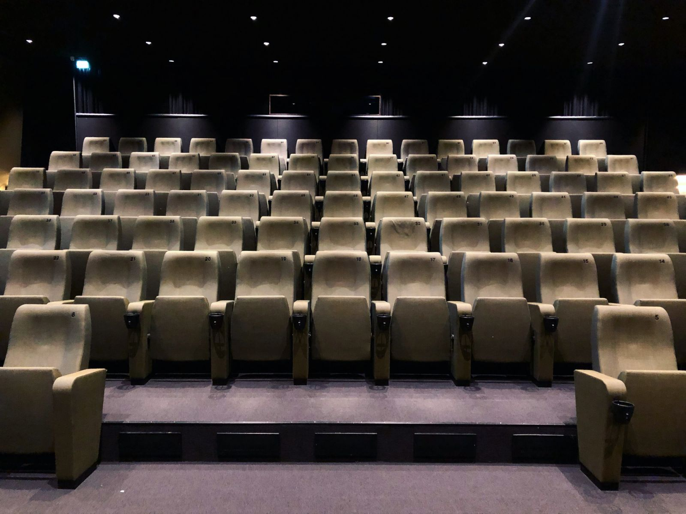

OM OSS
Folkets Bio Umeå är en självstyrande förening kopplad till riksföreningen Folkets Bio, en rikstäckande biograforganisation med 18 biografer runt om i landet. Från Luleå i norr till Malmö i söder. På Folkets Bios biografer visas filmer från hela världen, ofta konstnärligt kvalitativa filmer med aktuella och tankeväckande ämnen som riktar sig till både barn och vuxna. Riksföreningen Folkets Bio har också egen distribution av både utländsk och svensk film till alla Sveriges biografer. Klicka här för att besöka Folkets Bios hemsida.
Folkets Bio Umeå är en ideell förening som startade våren 1973, samma år som riksföreningen Folkets Bio, och är därmed en av landets äldsta lokalavdelningar. En gammal maskinverkstad på Gärdesvägen 6 gjordes i november 1973 om till den biograf som föreningen verkade i under 41 år. Biografen bestod på slutet av en salong på 54 platser och ett litet källarkafé med försäljning av kaffe, té och godis. Gärdesvägen 6 blev med sina 41 år den hittills längst aktiva biografen inom Riksföreningen Folkets Bio. Efter lång och trogen tjänst gick sista biografvisningarna i oktober 2014, i form av Pawel Pawlikowskis film Ida, detta innan den slutliga utflyttningshelgen som förgylldes av en Litauisk Filmfestival. Efter decennier av sökande efter mer centrala lokaler för verksamheten inledde föreningen förhandlingar med Umeå kommun om nya lokaler i och med bygget av Umeås kulturhus Väven och i maj 2014 skrevs ett nytt avtal med Umeå Kommun. Den nya biografen invigdes 21 november 2014 med visning av Girlhood av Céline Sciamma. Föreningen har nu två salonger för biografdrift, Tystnad och Tagning, som rymmer 100 respektive 35 platser.

Personal
Daniel Tollefsen Altamirano
Biografföreståndare
daniel@folketsbioumea.se
Miranda Larsson
Kommunikatör
miranda@folketsbioumea.se
Mia Rogersdotter Gran
Festivalproducent UEFF
mia@folketsbioumea.se
Anders Jonsson
Tekniskt ansvarig
anders@folketsbioumea.se
Anna Brodin
Skolbiosamordnare
anna@folketsbioumea.se
Marie Malmi
Ordförande
marie@folketsbioumea.se